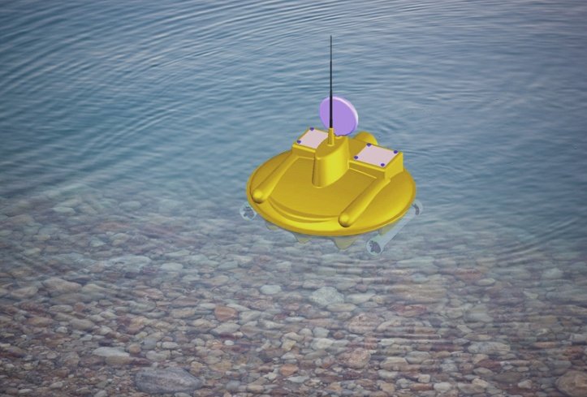

Надводно-подводный (НПК) комплекс предназначен для проведения следующих видов подводных работ:
Основной особенностью НПК является наличие интеллектуальной системы, способной действовать в условиях изменяющейся внешней обстановки и адекватно реагировать на различные внешние факторы.
Одним из примеров функционирования НПК в подобных условиях является его способность идентифицировать подводные объекты, а также определять их пространственное местоположение.
Комплекс состоит из надводного носителя и погружаемого модуля, на котором расположены фото- видеоаппаратура и различные измерительные датчики. В различных вариантах комплекс может быть представлен в следующих модификациях:
Фото- видео- и др. информация сохраняется в запоминающем устройстве на борту носителя, а также может передаваться в оперативном режиме как по GPRS-каналу, так и по телевизионному сигналу на пульт управления и контроля. Визуальная информация отображается на экране пульта управления оператора в реальном времени, что позволяет осуществлять оперативный контроль за работой комплекса.
В автоматическом режиме НПК действует по определённой программе, заложенной в бортовом компьютере. В этом случае он способен выполнять задачи, в которых происходит движение по определенной заданной траектории и в определённых точках этой траектории многократно выполняются определённые однотипные действия. Примером таких работ могут являться работы по картографированию дна рек и водоёмов.
В телеуправляемом режиме НПК функционирует на основании видеоинформации, передаваемой на экран монитора, а обратная связь осуществляется путем передачи радиосигнала. В этом случае любые решения принимает непосредственно оператор, в задачи самого комплекса входит лишь управление отдельными системами, не связанными с алгоритмом действий.
В этом режиме НПК может быть использован в различных научных исследованиях, а также совместно с интеллектуальной системой управления при выполнении поиска и идентификации подводных объектов.
С использованием интеллектуальной системы управления НПК способен функционировать полностью в автономном режиме, выполняя весь спектр перечисленных выше работ. Особенность функционирования комплекса в этом режиме состоит именно в использовании элементов искусственного интеллекта, что в свою очередь влияет и на функционирование НПК в окружающей среде. Наличие искусственного интеллекта позволяет оперативно реагировать на поступающую информацию, анализировать её и вырабатывать соответствующие адекватные действия.
В частности, одной из определяющих способностей можно подчеркнуть возможность самостоятельно определять и идентифицировать подводные объекты, а также вырабатывать последовательность действий по отношению к ним. К исключительным возможностям этого комплекса можно отнести способность самостоятельного принятия решения в условиях отсутствия возможности контроля ситуации со стороны человека.